Statistics with Probability
Satistics : Probability Distribution
https://numpy.org/doc/stable/reference/random/legacy.html
1. Normal Distribution
import matplotlib.pyplot as plt
%matplotlib inline
import seaborn as sns
import numpy as np
import pandas as pd
import math as math
sns.set()
$$f(x,\mu,\sigma^{2}) = \frac{1}{\sqrt{2\pi\sigma^{2}}} e ^{\frac{-(x-\mu)^{2}}{2\sigma^{2}}}$$
def normal(x,m,s):
f = (1/np.sqrt(2*np.pi*s))*np.exp(-(x-m)**2/(2*s**2))
return f
x = np.arange(-20,20,0.01)
plt.figure(figsize = [8,6])
plt.plot(x,normal(x,1.0,1.0),x,normal(x,2.0,2.0),\
x,normal(x,3.0,3.0),x,normal(x,4.0,4.0),\
x,normal(x,5.0,5.0),x,normal(x,6.0,6.0))
plt.show()
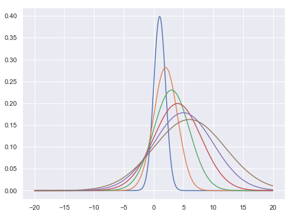
Sampling Normal distribution
mu, sigma = 0, 0.1 # mean and standard deviation
s = np.random.normal(mu, sigma, 1000)
s[0:10]
array([-0.00682791, -0.08991848, 0.24455438, 0.14724173, -0.01939023,
0.07666377, -0.00425391, -0.04374468, -0.03458053, -0.08640109])
sns.distplot(s)
<matplotlib.axes._subplots.AxesSubplot at 0x18e5f580f98>
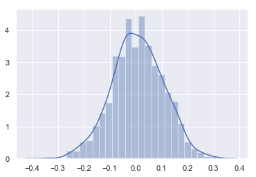
- Lets check this with uniform distribution
s0 = np.random.rand(10000)
sns.distplot(s0)
<matplotlib.axes._subplots.AxesSubplot at 0x18e5f7a5240>
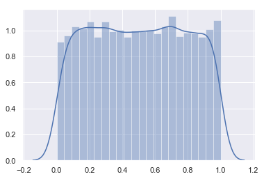
2. Binomial Distribution
The probability density for the binomial distribution is
$$P(N) = \binom{n}{N}p^N(1-p)^{n-N}$$,
where n is the number of trials, p is the probability of success, and N is the number of successes.
When estimating the standard error of a proportion in a population by using a random sample, the normal distribution works well unless the product pn <=5, where p = population proportion estimate, and n = number of samples, in which case the binomial distribution is used instead. For example, a sample of 15 people shows 4 who are left handed, and 11 who are right handed. Then p = 4/15 = 27%. 0.2715 = 4, so the binomial distribution should be used in this case.
Tossing n coins | throwing 10 balls in 2 compartments
# number of coins in one experiment
n = 10
# probability for head
p = .5
#number of experiment
N = 1000
s = np.random.binomial(n, p, 1000)
s[0:10]
array([5, 4, 5, 6, 3, 3, 5, 3, 2, 6])
sns.distplot(s)
<matplotlib.axes._subplots.AxesSubplot at 0x18e60ba5828>
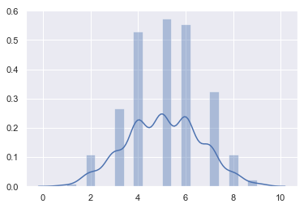
- Taking 100 coins
n, p = 100, .5 # number of trials, probability of each trial
s = np.random.binomial(n, p, 100000)
sns.distplot(s)
<matplotlib.axes._subplots.AxesSubplot at 0x18e60bd0a90>
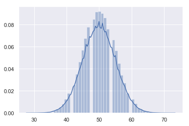
3. Multinomial Distribution
The multinomial distribution is a multivariate generalization of the binomial distribution. Take an experiment with one of p possible outcomes. An example of such an experiment is throwing a dice, where the outcome can be 1 through 6. Each sample drawn from the distribution represents n such experiments. Its values, X_i = [X_0, X_1, ..., X_p], represent the number of times the outcome was i.
Tossing n-number of p-side dice
# number of dice in one experiment
n = 20
# number of face
p = 6
#number of experiment
N = 100
s = np.random.multinomial(n, [1/float(p)]*6, 1000)
s[0:5]
array([[4, 4, 3, 3, 1, 5],
[4, 4, 2, 4, 5, 1],
[2, 5, 2, 3, 3, 5],
[6, 5, 3, 1, 3, 2],
[4, 4, 3, 2, 3, 4]])
data = []
for item in s:
data.append({"1":item[0],"2":item[1],"3":item[2],"4":item[3],"5":item[4],"6":item[5]})
DF = pd.DataFrame(data)
DF[0:20].plot(figsize = [18,4])
<matplotlib.axes._subplots.AxesSubplot at 0x18e60ccc2b0>
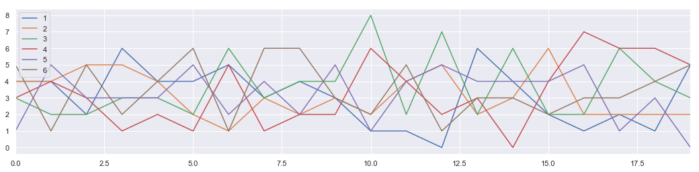
DF.hist(figsize = [15,8], bins = 10)
plt.show
<function matplotlib.pyplot.show(*args, **kw)>
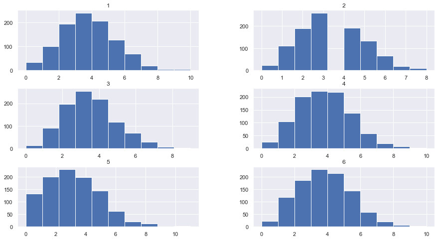
4. $\chi^{2} $ Distribution
When df independent random variables, each with standard normal distributions (mean 0, variance 1), are squared and summed, the resulting distribution is chi-square (see Notes). This distribution is often used in hypothesis testing.

s = np.random.chisquare(2,10)
s
array([1.26510584, 0.84928556, 2.36818992, 0.54182822, 0.16216812,
0.45026504, 0.31461063, 0.14277381, 3.8927845 , 2.3985151 ])
plt.figure(figsize = [15,10])
plt.subplot(3,2,1)
s = np.random.chisquare(2,1000)
sns.distplot(s, bins =20)
plt.subplot(3,2,2)
s = np.random.chisquare(3,1000)
sns.distplot(s, bins =20)
plt.subplot(3,2,3)
s = np.random.chisquare(4,1000)
sns.distplot(s, bins =20)
plt.subplot(3,2,4)
s = np.random.chisquare(5,1000)
sns.distplot(s, bins =20)
plt.subplot(3,2,5)
s = np.random.chisquare(6,1000)
sns.distplot(s, bins =20)
plt.subplot(3,2,6)
s = np.random.chisquare(7,1000)
sns.distplot(s, bins =20)
plt.show()
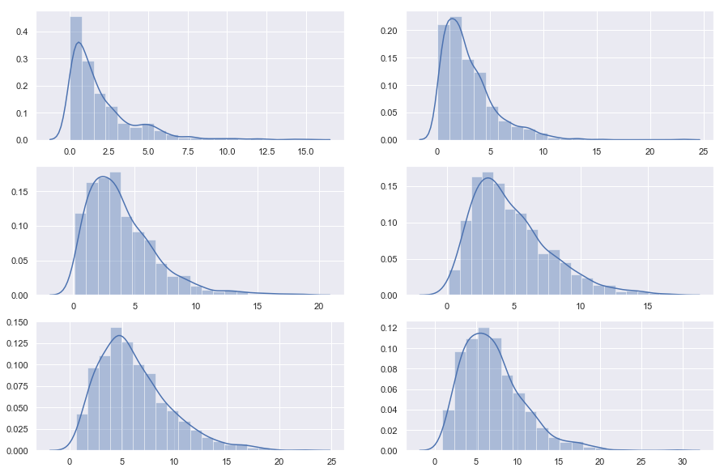
5. The Poisson distribution
$$f(k; \lambda)=\frac{\lambda^k e^{-\lambda}}{k!}$$
For events with an expected separation $\lambda$ the Poisson distribution $f(k; \lambda)$ describes the probability of k events occurring within the observed interval $\lambda$.
s = np.random.poisson(5, 10000)
s[0:10]
array([4, 3, 7, 6, 2, 4, 7, 4, 8, 3])
sns.distplot(s)
<matplotlib.axes._subplots.AxesSubplot at 0x15e25adc400>
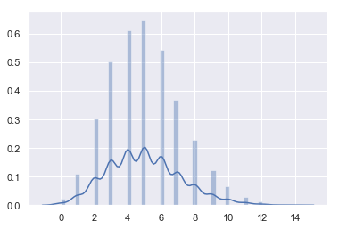
6. Multivariate Gaussian Distribution (Gaussian Mixture)

 |
| 
from matplotlib import cm
from mpl_toolkits.mplot3d import Axes3D
fig = plt.figure(figsize = [8,6])
ax = fig.gca(projection='3d')
size = 100
sigma_x = 4.
sigma_y = 4.
x = np.linspace(-10, 10, size)
y = np.linspace(-10, 10, size)
xg, yg = np.meshgrid(x, y)
zg = (1/(2*np.pi*sigma_x*sigma_y) * np.exp(-(xg**2/(2*sigma_x**2)
+ yg**2/(2*sigma_y**2))))
# Plot the surface.
surf = ax.plot_surface(xg,yg,zg,\
cmap=cm.coolwarm,\
linewidth=0)
plt.show()
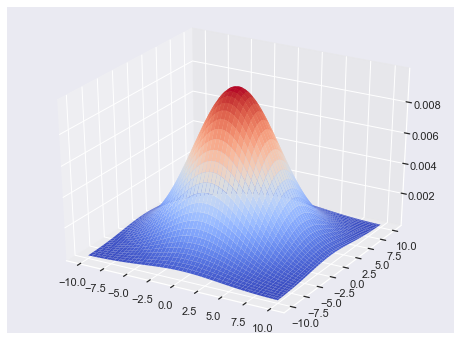
- 2D Gaussian Random numbers
mean = [0, 0]
cov = [[1, 0.5], [0.5, 1]]
x, y = np.random.multivariate_normal(mean, cov, 5000).T
plt.plot(x, y, 'x')
plt.axis('equal')
plt.show()
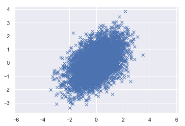
- 3D - Gaussian random numbers
mean = [0, 0, 0]
cov = [[1, 0.5, 0.5], [0.5, 1, 0.5], [0.5, 0.5, 1]]
x, y, z = np.random.multivariate_normal(mean, cov, 5000).T
from mpl_toolkits.mplot3d import Axes3D
import matplotlib.pyplot as plt
fig = plt.figure(figsize = [10,8])
ax = fig.add_subplot(111, projection='3d')
ax.scatter(x, y, z, c='g', marker='x')
ax.set_xlabel('X Label')
ax.set_ylabel('Y Label')
ax.set_zlabel('Z Label')
plt.show()
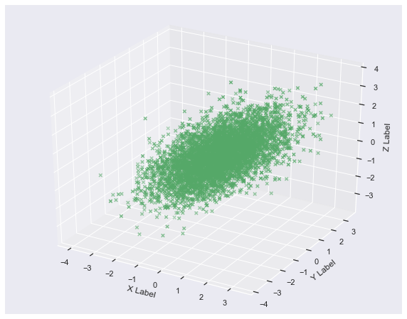
Connection to Machine Learning (Optional)
1. Kernel Density Estimation
In statistics, kernel density estimation (KDE) is a non-parametric way to estimate the probability density function of a random variable. Kernel density estimation is a fundamental data smoothing problem where inferences about the population are made, based on a finite data sample.
Let $(x1, x2, …, xn)$ be a univariate independent and identically distributed sample drawn from some distribution with an unknown density ƒ. We are interested in estimating the shape of this function ƒ. Its kernel density estimator is
$$ {f}{h}(x)={\frac {1}{n}}\sum {i=1}^{n}K_{h}(x-x_{i})={\frac {1}{nh}}\sum {i=1}^{n}K{\Big (}{\frac {x-x{i}}{h}}{\Big )}$$

where K is the kernel — a non-negative function — and h > 0 is a smoothing parameter called the bandwidth.
- Data generater
def generate_data(seed=17):
# Fix the seed to reproduce the results
rand = np.random.RandomState(seed)
x = []
dat = rand.lognormal(0, 0.3, 1000)
x = np.concatenate((x, dat))
dat = rand.normal(3, 1, 1000)
x = np.concatenate((x, dat))
return x
- Data exploration
x_train = generate_data()[:, np.newaxis]
fig, ax = plt.subplots(nrows=1, ncols=3, figsize=(15, 5))
plt.subplot(131)
plt.scatter(np.arange(len(x_train)), x_train, c='red')
plt.xlabel('Sample no.')
plt.ylabel('Value')
plt.title('Scatter plot')
plt.subplot(132)
plt.hist(x_train, bins=50)
plt.title('Histogram')
fig.subplots_adjust(wspace=.3)
plt.subplot(133)
sns.distplot(x_train, bins=50)
plt.title('Seaborn-kde')
fig.subplots_adjust(wspace=.3)
plt.show()
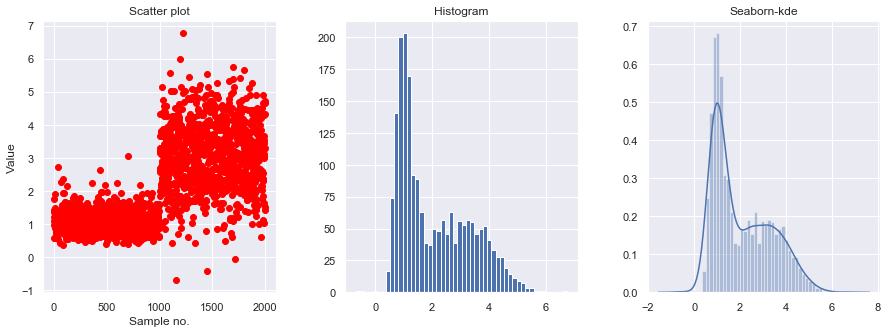
- Implement KDE with test data
from sklearn.neighbors import KernelDensity
x_test = np.linspace(-1, 7, 2000)[:, np.newaxis]
model = KernelDensity()
model.fit(x_train)
log_dens = model.score_samples(x_test)
plt.fill(x_test, np.exp(log_dens), c='b')
pass
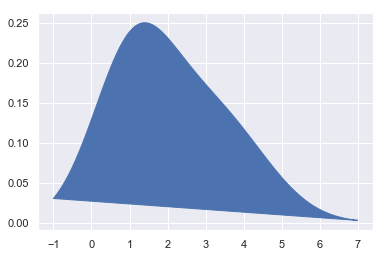
- Setting bandwidth in Kerneldensity
bandwidths = [0.01, 0.05, 0.1, 0.5, 1, 4]
fig, ax = plt.subplots(nrows=2, ncols=3, figsize=(10, 7))
plt_ind = np.arange(6) + 231
for b, ind in zip(bandwidths, plt_ind):
kde_model = KernelDensity(kernel='gaussian', bandwidth=b)
kde_model.fit(x_train)
score = kde_model.score_samples(x_test)
plt.subplot(ind)
plt.fill(x_test, np.exp(score), c='b')
plt.title("h="+str(b))
fig.subplots_adjust(hspace=0.5, wspace=.3)
plt.show()
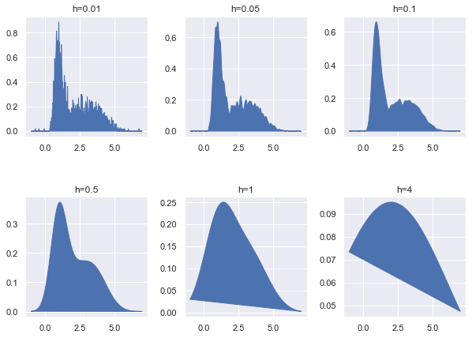
Mini Assignment:
- Generate two (1-d) random normal distribution samples with two means seperated by 1 unit.
- Find the representative distribution by implementation of kernelmdesity estimation.
2. Gaussian Mixture Model (Optional)
from matplotlib.colors import LogNorm
from sklearn import mixture
n_samples = 1000
# generate random sample, two components
np.random.seed(0)
# generate spherical data centered on (20, 20)
shifted_gaussian = np.random.randn(n_samples, 2) + np.array([20, 20])
# generate zero centered stretched Gaussian data
C = np.array([[0.5, -0.7], [3.5, 1.7]])
stretched_gaussian = np.dot(np.random.randn(n_samples, 2), C)
# concatenate the two datasets into the final training set
X_train = np.vstack([shifted_gaussian, stretched_gaussian])
# fit a Gaussian Mixture Model with two components
clf = mixture.GaussianMixture(n_components=2, covariance_type='full')
clf.fit(X_train)
GaussianMixture(covariance_type='full', init_params='kmeans', max_iter=100,
means_init=None, n_components=2, n_init=1, precisions_init=None,
random_state=None, reg_covar=1e-06, tol=0.001, verbose=0,
verbose_interval=10, warm_start=False, weights_init=None)
x = np.linspace(-20., 30.)
y = np.linspace(-20., 40.)
X, Y = np.meshgrid(x, y)
XX = np.array([X.ravel(), Y.ravel()]).T
Z = -clf.score_samples(XX)
Z = Z.reshape(X.shape)
plt.figure(figsize = [12,10])
# display predicted scores by the model as a contour plot
CS = plt.contour(X, Y, Z, norm=LogNorm(vmin=1.0, vmax=1000.0),
levels=np.logspace(0, 3, 10))
CB = plt.colorbar(CS, shrink=0.8, extend='both')
plt.scatter(X_train[:, 0], X_train[:, 1], .8)
plt.title('Negative log-likelihood predicted by a GMM')
plt.axis('tight')
plt.show()
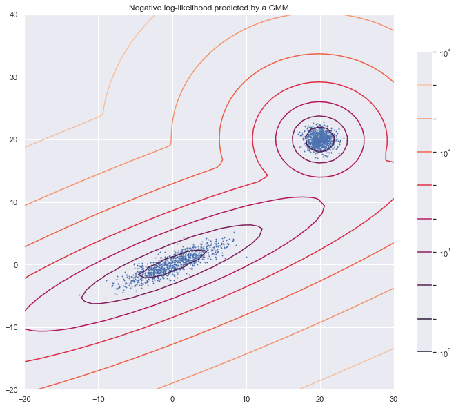